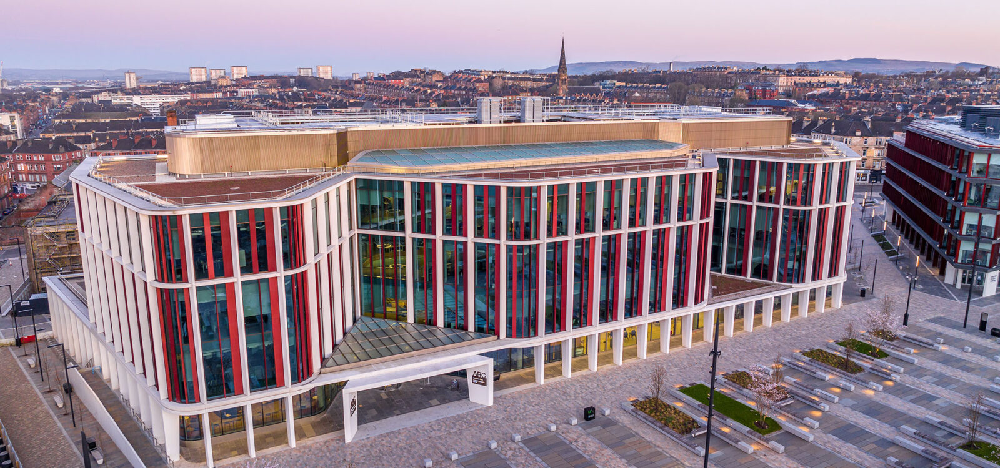

Workshop 2025
Celebrating one year of GLE\(^2\)N
GLE\(^2\)N will host its first in-person workshop in December 2025 at the University of Glasgow, marking the one-year anniversary of the network.
Kindly sponsored by the Glasgow Mathematical Journal Trust, this one-day event will bring together researchers in extreme value theory (EVT) and statistical risk analysis, with a particular focus on:
Advances in EVT theory, methodology, and real-world impact,
Applications to climate, environment, health, and finance,
Emerging challenges and opportunities for collaboration across Scotland and beyond.
Goals
The workshop will:
Strengthen connections across the Scottish and UK EVT community,
Provide a platform for early-career researchers to present their work and network,
Highlight the role of EVT in addressing real-world challenges.
Draft agenda
9:00 - 9:15 — GLEN and workshop introduction
9:15 - 9:45 — invited talk 1
9:45 - 10:15 — invited talk 2
10:15 - 10:40 — coffee break
10:40 - 11:00 — contributed talk 1
11:00 - 11:20 — contributed talk 2
11:20 - 11:40 — contributed talk 3
11:40 - 12:00 — contributed talk 4
12:00 - 13:30 — lunch (not provided)
13:30 - 14:00 — invited talk 3
14:00 - 14:30 — invited talk 4
14:30 - 15:00 — coffee break
15:00 - 17:00 — discussion (with a 10min break in between)
17:00 - onwards — drinks
Practical Details
Date: Thursday 11 December 2025, 9:00 - 17:00.
Location: Advanced Research Centre (ARC), University of Glasgow.
Catering: Refreshments provided, lunch not provided. See below our lunch reccomendations.

Lunch
Kindly note that lunch is not provided, but a list with reccomendations for restaurants and delis close to our venue can be found below.
The ARC is very close to Byres Road, a vibrant street with lots of restaurants, delis, shops, and tea/coffee shops. Here is a list with some recommendations, but feel free to walk along the street and see what is out there. They are all within walking distance from the workshop venue. Please consult the corresponding websites for menu details/dietary requirements.
There are a variety of dining options available across campus. To learn more about our on-campus outlets, please visit this link.

Participation
We anticipate around 25–30 participants, including students, early-career researchers, and established academics from across the UK. If you are interested in attending, please 👉 complete the registration form. We will do our best to accommodate everyone, but places cannot be guaranteed. A limited budget is available to support student and ECR participation. If you would like to be considered for this support, please indicate so in the relevant section of the form.